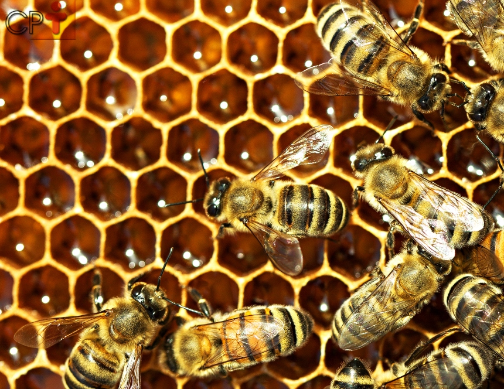

Apis mellifera
A Apis mellifera, a abelha europeia, é uma das espécies de abelhas mais conhecidas e domesticadas no mundo devido à produção de mel. Aqui estão algumas de suas características distintivas:
Socialidade: A Apis mellifera é uma abelha social que vive em colônias altamente organizadas com divisão de trabalho entre as castas, incluindo rainhas, operárias e zangões.
Produção de Mel: Essas abelhas são notáveis pela produção de mel em quantidades significativas. Elas coletam néctar de flores, transformam-no em mel e armazenam em favos de cera.
Cera de Abelha: As operárias da Apis mellifera produzem cera de abelha que é usada para construir favos de mel, onde o mel e o pólen são armazenados, e onde as larvas são criadas.
Abundância: A Apis mellifera é uma das espécies de abelhas mais comuns e amplamente distribuídas, encontradas em muitas regiões do mundo devido à sua domesticação.
Polinização: Além de produzir mel, as abelhas da espécie Apis mellifera desempenham um papel significativo na polinização de culturas agrícolas, ajudando a fertilizar uma variedade de plantas.
Criação de Rainhas: As abelhas operárias têm a capacidade de criar rainhas em determinadas situações, como quando a colônia precisa de uma nova rainha.
Zangões: Os zangões são os machos da colônia, e sua principal função é acasalar com a rainha. Eles não têm ferrões e não coletam néctar ou pólen.
Ferrões: As operárias da Apis mellifera têm ferrões que usam para se defender da ameaça. Quando picam, deixam o ferrão na pele do agressor, o que leva à morte da abelha.
Comunicação: As abelhas da Apis mellifera se comunicam por meio de danças que transmitem informações sobre a localização de fontes de alimento, como flores e água.
Organização Social: A colônia de Apis mellifera é altamente organizada, com tarefas específicas atribuídas a diferentes castas. A rainha é a única fêmea reprodutora, enquanto as operárias cuidam das tarefas de forrageamento, cuidado com as larvas e manutenção da colônia.
Essas características fazem da Apis mellifera uma espécie de abelha social notável, conhecida tanto por sua produção de mel quanto por seu papel importante na polinização de culturas.